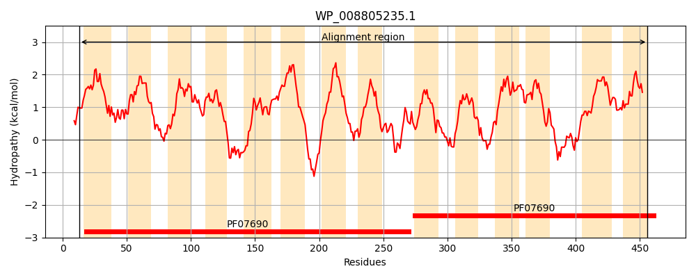
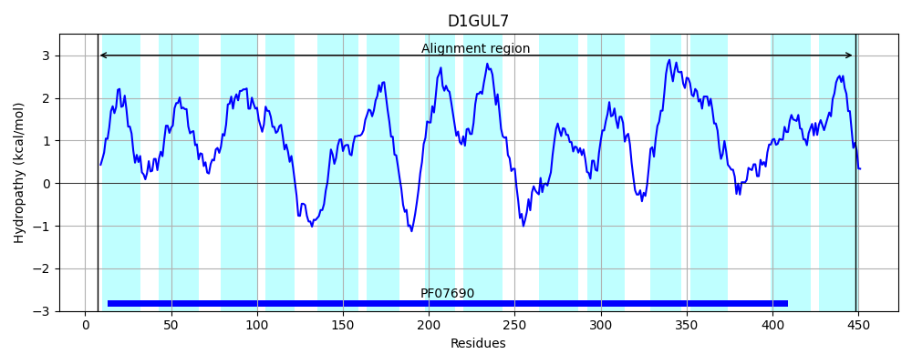
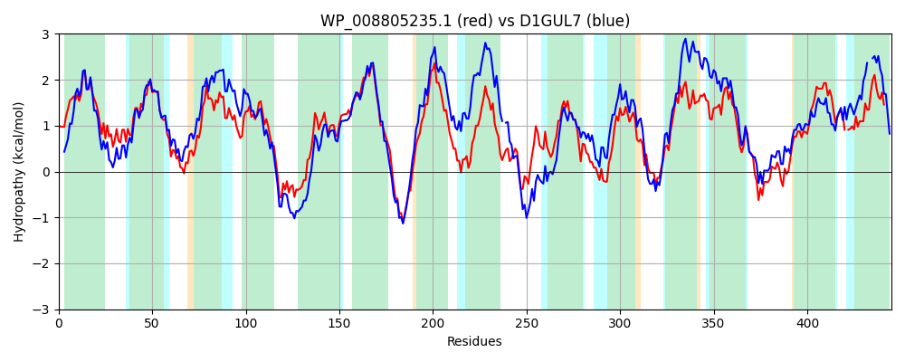

Hit Accession: D1GUL7
Hit TCID: 2.A.1.3.59
Hit Description: gnl|BL_ORD_ID|3013 gnl|TC-DB|D1GUL7|2.A.1.3.59 Putative transporter protein OS=Staphylococcus aureus (strain TW20 / 0582) GN=norC PE=4 SV=1
Mach Len: 445
e:0.000000
Query TMS Count : 14
Hit TMS Count: 14
TMS-Overlap Score: 13.650000
Predicted Substrates:CHEBI:35190;diterpene, CHEBI:23765;quinolone
BLAST Alignment:
Score: 1181 , Bit scores: 459 bits, E-value: 1.1e-159, Alignment length: 445, Percentage identity: 51
Query: 13 GSDRLLVGIVLSVLTFWLFAQSVINVVPAMKSSLDISLETLTLAVSLSALFSGCFVVASGGLADKFGRMRMTTLGLGLSIVGSAMLVVAQGPGLFLAGRVLQGLSAACIMPATLALIKTWYEGRARQRAVSFWVIGSWGGSGLCSFVGGAIATGLGWRWIFVFSIAVALLALFLLRGTPESRSASASQHKLDVGGLLSLIAALVLVNLFISKGHGWGWSSPLSLTMLVGALAAGAVFIRNGMRKGEAALIDFALFRNRAYGAAVLSNFLLNGAIGTMMIASIWLQQGHHLTPLESGMMTLGYLVTVLAMIRVGEKLLQRYGARLPMMAGPVLTAIAIGLISCTFLDKALYIGVVFASNVLFGLGLGCYATPSTDTAVANAPENKIGVASGIYKMGSSLGGAMGIAVTASLFALFLPLGMAH-AAQYALWFNAVLCLGAMAVSALL 456
G ++L++GIVL V+TFWLFAQS++NVVP ++ S + T+++AVSL+ALFSG FVV +GGLADK GR++MT +GL LSI+GSA++++ P L + GR++QG+SAACIMP+TLA++KT+YEG RQRA+S+W IGSWGGSG+CS GGA+AT +GWRWIF+FSI VA+L++ L++GTPE++S + HK DV GL+ L+ L+ +N+ I+KG G++S ++ + A +F+ N +K + LIDF LF N+ Y A +SNFLLNG GT+++A+ ++QQG T L++G +++ YL+ VL MIRVGEKLLQ+ G++ PM+ G + I I LIS FL Y+ + FGLGLG YATPSTDTA++NAP +K+GVASGIYKM SSLGGA G+A++ +++A + H A ALW N + +G MA A+L
Sbjct: 7 GGNKLILGIVLGVITFWLFAQSLVNVVPNLQQSFGADMGTISIAVSLTALFSGMFVVGAGGLADKIGRVKMTNIGLLLSIIGSALIIITNLPALLILGRIIQGVSAACIMPSTLAIMKTYYEGAERQRALSYWSIGSWGGSGICSLFGGAVATTMGWRWIFIFSIIVAVLSMLLIKGTPETKSEVTNTHKFDVAGLIVLVVMLLSLNVVITKGAALGYTSLWFFGLIAIVIVAFFIFL-NVEKKVDNPLIDFKLFENKPYTGATISNFLLNGVAGTLIVANTFVQQGLGYTALQAGYLSITYLIMVLLMIRVGEKLLQKMGSKRPMLLGTFIVIIGIALISLVFLPGIFYVISCVVGYLCFGLGLGIYATPSTDTAISNAPLDKVGVASGIYKMASSLGGAFGVAISGAVYAGAVAATSIHTGAMIALWVNVL--MGIMAFIAIL 448 | Protein Hydropathy Plots: |
|---|
|  |  |
Pairwise Alignment-Hydropathy Plot:
|
|---|
|  |